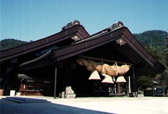
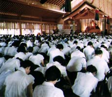

出雲大社（いずもおおやしろ）
出雲の国は、神の国、神話の国として知られています。その"出雲の国"には、今もなお古の神社がいたるところにあります。そして、その中心が「大国主大神（おおくにぬしのおおかみ）」をおまつりする出雲大社（いづもおおやしろ）です。大国主大神は、「だいこくさま」と申して慕われている神さまです。だいこくさまは、「天の下造らしし大神」とも申しますように、私達の遠い遠い親達と喜びも悲しみも共にせられて、国土を開拓され、国づくり、村づくりに御苦心になり、農耕・漁業をすすめ、殖産の法をお教えになり、人々の生活の基礎を固めて下さいました。また、医薬の道をお始めになって、今もなお人々の病苦をお救いになる等、慈愛ある御心を寄せて下さったのです。だいこくさまは、救いの親神さまであると共に、すべてのものが「おのずから」の姿にあるように護って下さる親神です。
出雲大社教（いずもおおやしろきょう）
出雲大社教は、愛の神、幸福の神、結びの神である大国主大神（だいこくさま）と私たちとを結び、私たちが明るい家庭、明るい社会を築くように教え導くことを目的とする教団です。この出雲大社に対する国民の信仰を宗教教団として結成をみたのは、明治６年で、その組織を図ったのは、時の第八十代出雲國造（いづもこくそう）、出雲大社大宮司千家尊福（せんげたかとみ）です。千家尊福は、全国に布教活動を展開し、今日の出雲大社教の基礎をつくりました。
出雲大社教は全国に分祠・分院・教会・講社の布教機関を設け、神楽殿となりのおくにがえり会館内にある教務本庁がそれらを統括、サポートしています。北は北海道から南は沖縄まで全国で布教活動を行っています。大国主大神さまのみおしえを常に新鮮な気持ちで伝え、悩める人々を助け、窮まれる人々を救い、明るく楽しい人・家庭・社会・国・世づくりのために活動しています。また青年会や婦人会活動を通じて地域にとけこんだ活動をしています。
出雲大社と出雲大社教
出雲大社教は、出雲大社宮司、第八十代国造である千家尊福公によって創立されました。
幽冥主宰という大国主大神の御神徳を宣布し、宗教としての神道の確立に熱心であった尊福公は、出雲大社の信仰を中心とした神道布教を行うため、各地の出雲講や甲子講などを組織化し、明治６年１月に出雲大社敬神講を設立、同年９月には出雲大社教会と名を改めました。これが出雲大社教の前身です。
出雲大社の御祭神、大国主大神の御神徳の布教のため、出雲大社の宮司によって興されたのが「出雲大社教」であります。もともとは出雲大社の教務部として一体のものでありました。 こうして、出雲大社のなかで生まれ育ってきた出雲大社教ですが、このようなあり方を認めない政治の波涛が押し寄せてきました。
明治１５年１月、明治政府は、神社にて神祭りに奉仕する神主がその神様の教えを説き、それにより人々を救うという布教活動をしてはならない、神主はお祭りのみに専心し、葬儀にも関係してはならないという「神官教導職分離令」が公布されました。 この法令により、出雲大社の宮司であった尊福公も出雲大社の祭事に専念するか、布教の道に進むかの岐路に立たされました。 そこで、尊福公は、人生の一大事である死の問題を解決し、神道的暮らしの中での安心立命を人々に説くために、出雲大社宮司をやむなく辞し、出雲大社教会を出雲大社より組織上分離し、明治１５年１１月「神道大社教」と改称、自ら初代管長として先頭に立って全国を巡教して廻りました。また、明治１９年には「大社教」と改称されました。
終戦まで、この状態が続きましたが、昭和２０年には、神社は国家管理の手を離れ、同２１年には、「神官教導職分離令」も廃止されました。また、同年には「出雲大社教」と改称されました。
そこで、元の姿に復しましょうという話が高まり、出雲大社教は出雲大社に復帰合同することとなりました 現在、出雲大社教は出雲大社を宗祠として仰ぎ、出雲大社の布教機関・教務部として、一体として有機的に活動しています。